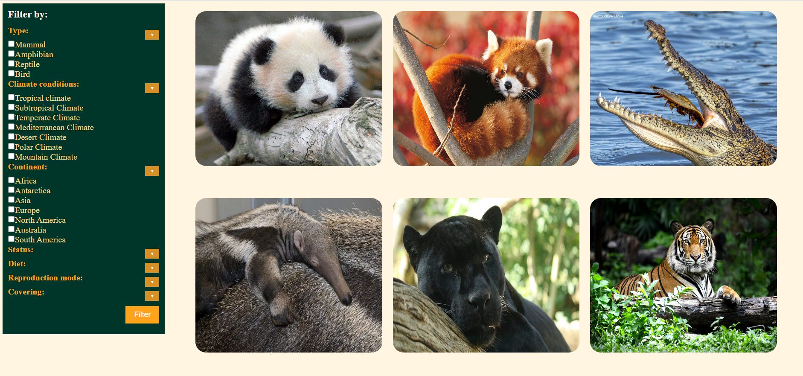
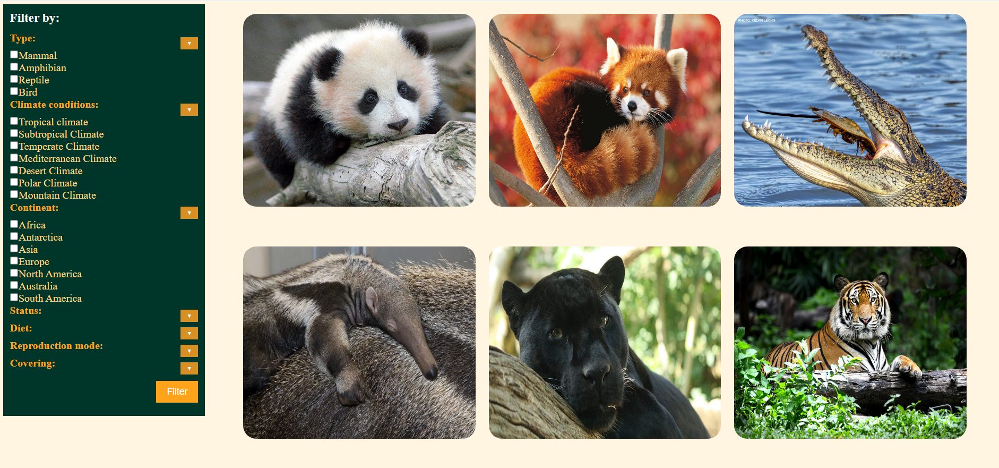

Etapele dezvoltarii proiectului si sarcinile fiecarui membru al echipei pot fi vizualizate pe GitHub.
Abstract
Cerinta: Sa se implementeze o aplicatie Web menita a gestiona informatiile vizand o gradina zoologica. Se vor
facilita redarea si managementul datelor
despre animalele gazduite: denumire populara/stiintifica, descriere (de dorit, multilingva), origine, statut
(e.g., specie protejata, pe cale de disparitie,
daunatoare etc.), caracteristici (de exemplu, dependenta de clima, periculozitate, proprietati speciale), specii
inrudite, dusmani naturali, imagini de interes,
regim alimentar (vegetarian, carnivor, omnivor), mod de inmultire si altele. Se vor pune la dispozitie mecanisme
de cautare/filtrare/prezentare multi-criteriala
-- de pilda, afisarea tuturor mamiferelor cu blana de origine europeana ce pot fi dresate sau generarea unei liste
de pasari/taratoare capabile sa supravietuiasca in conditii desertice.
Datele vor putea fi importate/exportate via fisiere disponibile in formatele JSON si XML. Functionalitatile
esentiale se vor oferi si de catre un API REST/GraphQL.
Introduction
Această aplicație web oferă utilizatorului o gama larga de informații despre animalele din grădina
zoologică, avand de asemenea si o sectiune dedicata acvariului din cadrul acesteia.
Platforma a fost dezvoltată pentru a fi ușor de utilizat,
astfel încât utilizatorul să poată naviga cu ușurință pe paginile aplicației pentru a găsi informațiile
despre animalele dorite. Utilizatorul poate să caute informații despre animale, adăuga anumite filtre
pentru a restrânge căutarea sau a cauta direct ce detalii doreste sau să adauge animalele preferate la lista de
favorite.
Aplicația oferă, de asemenea, o secțiune dedicată rezervării de bilete pentru grădina zoologică,
astfel încât utilizatorul să poată să-și planifice vizita cu ușurință. Aceasta include totodata informații despre
programul
de funcționare al grădinii zoologice, punand la dispozitie atat o harta a gradinii zoologice, in care pot fi
vizualizate zonele in care se afla animalele,
precum si o harta cu locatia in care se afla gradina.
Pentru a oferi o experiență personalizată, aplicația dispune de o funcție de schimbare a temei, iar Pentru a
asigura securitatea contului
utilizatorului, aplicația oferă posibilitatea de a-și schimba parola și
datele de cont în orice moment
Pe lângă acestea,
aplicația dispune și de o secțiune specială pentru administrator, care are acces la funcții avansate de gestionare
a datelor animalelor din grădină zoologică și acvariu. Aceasta include posibilitatea de a adăuga, șterge sau
modifica
informații despre animale.
Pentru crearea aplicației, am folosit tehnologii web precum HTML și CSS, și am integrat o mică parte
de JavaScript pentru a oferi o experiență mai dinamică utilizatorilor.
General description
Main functionalities
User functionalities
-Login/logout*
-Înregistrare
-Recuperare parolă*
-Schimbare parolă/nume/adresă de email*
-Schimbare tema*
-Vizualizare animale
-Căutare animale
-Filtrare animale
-Vizualizare detalii animale
-Export date despre animale în formate precum: XML, JSON, CSV*
-Adăugare animale la favorite*
-Vizualizare animale favorite*
-Rezervare
-Trimitere mesaj*
-Vizualizare harta grădina zoologică
* funcționalități disponibile doar pentru utilizatorii conectați
Admin functionalities
-Vizualizare statistici referitoarela utilizatori, animale și rezervări
-Navigare prin aplicație
Vizulizare date utilizatori
-Ștergere utilizatori
-Vizualizare animale
-Ștergere animale
-Adăugare animal prin import din formatele: XML, JSON
-Vizualizare rezervări
-Ștergere rezervări
Operating Environment
Aplicația este disponibilă pentru toate browserele larg utilizate și nu prezintă incompatibilități cu sistemele de operare des utilizate.
Implementation aspects
Aplicația a fost realizată folosind HTML, CSS, Javascript pentru partea de frontend, iar pentru a oferi funcționalitățile
necesare a fost utillizat un server realizat în NodeJS, fără a utiliza biblioteci sau framework-uri. Pentru gestionarea informațiilor
este folosită o bază de date MongoDB. Aplicația respectă cerințele impuse, asigurând o arhitectură bazată pe servicii web și respectând principiile designului web responsiv. Pentru comunicarea asincronă cu serviciile/API-urile web, se utilizează tehnologii Ajax, asigurând interacțiunea fluidă și eficientă între client și server.
Partea de client a aplicației este construită conform standardelor HTML5, cu un cod valid conform specificațiilor Consorțiului Web. Pentru stilizarea paginilor, se folosesc foi de stiluri CSS valide. Acest aspect asigură o experiență vizuală coerentă și plăcută pentru utilizatori.
Aplicația web respectă cerințele de import/export de date folosind formate deschise, precum CSV, XML și JSON. Aceasta facilitează transferul de informații între aplicație și alte sisteme, asigurând compatibilitate și interoperabilitate.
Existența unui modul propriu de administrare a aplicației web oferă posibilitatea gestionării eficiente a funcționalităților și a conținutului. Prin acest modul, administratorii pot gestiona și actualiza conținutul, asigurând un control complet asupra aplicației.
Aplicația web respectă cerințele precizate, aducând totodată și noi funcționalități.
Structure
[User] Landing page
Landing page-ul acestei aplicatii web are o interfata atractiva si este accesibila pentru utilizatori. Aceasta
prezinta o introducere
generala despre aplicatie si si ofera informatii specifice despre
diversele functionalitati ale aplicatiei, astfel incat utilizatorii sa
poata intelege modul in care aceasta le poate fi de ajutor.
In partea de sus se afla butonul de login pentru cei care vor sa se autentifice, iar la partea cu introducerea
generala se afla un buton pentru
cei care vor sa navigheze in aplicatie fara sa se conecteze.
[User] Login/Register/Forgot password
Procesul de login presupune furnizarea numelui utilizatorului, astfel
incat sa isi poata rezerva bilete pentru gradina zoologica, sa poata adauga animalele preferate la favorite si
alte facilitati.
In cazul in care utilizatorul si-a uitat parola, se poate folosi functia de recuperare a parolei pentru a putea
accesa din nou contul.
Procesul de register presupune crearea unui cont nou si furnizarea unor informatii precum numele, email-ul si
parola.
In momentul in care utilizatorul isi creeaza un cont, acesta trebuie sa confirme parola furnizata,
pentru a se asigura ca a introdus corect toate datele necesare.
Ambele functionalitati de login si register sunt proiectate astfel incat sa fie cat mai usor de utilizat.
[User] Homepage
Pe pagina de homepage, utilizatorul va gasi un meniu care va fi accesibil de asemenea din orice pagina a
aplicatiei,
pentru a facilita navigarea pe aplicatie. Totodata, utilizatorul va observa doua butoane care il pot duce
catre sectiunile cele mai importante ale aplicatiei: "Animalele din gradina zoo" si "Acvariul". Aceste butoane
sunt amplasate
in partea de sus a paginii, astfel incat utilizatorul sa le poata accesa usor si rapid.
In partea de mijloc a paginii de homepage se afla o serie de sectiuni care ofera informatii utile
utilizatorului. Aici pot fi
gasite detalii despre programul gradinii zoologice, un link catre harta gradinii zoologice, precum si o sectiune
de "Stiati ca"
ce contine curiozitati despre animale si gradina zoologica, menite sa starnesca interesul si curiozitatea
utilizatorului.
In partea de jos a paginii de homepage se afla o sectiune care contine doua imagini reprezentative pentru cele
doua
sectiuni principale ale aplicatiei (Gradina Zoologica si
Acvariul). Fiind cele mai importante sectiuni, acesta este
motivul pentru care am ales sa amplasam aceste fotografii in partea de jos a paginii de homepage, astfel incat
utilizatorul sa nu fie nevoit sa deruleze
pagina inapoi la inceput pentru a apasa pe acele butoane. Pagina de homepage este conceputa astfel
incat utilizatorul sa se poata orienta usor pe site si sa poata gasi informatiile de care are nevoie in mod
rapid si eficient.
[User] Program page
Pagina "Program", care poate fi accesata din homepage, cuprinde informatiile necesare utilizatorilor ce vor sa
viziteze gradina: programul pe zile al gradinii
si un formular pentru rezervarea biletelor. Formularul ofera posibilitatea a alegerii unei date in care se
va efectua vizita si a unui numar de bilete ce se doresc a fi rezervate.
[User] Zoo Map
Pagina cu harta gradinii zoologice este conceputa pentru a ajuta utilizatorii sa se orienteze si sa gaseasca
animalele din gradina zoo.
Animalele sunt reprezentate pe harta printr-un simbol specific, astfel incat utilizatorul sa poata gasi rapid
locul in care se afla animalul pe care il cauta.
[User] Animals page
Pagina "animals.html" este o pagină web responsive, adică se poate afișa corect pe diferite dispozitive, cum ar
fi desktop-uri,
tablete și telefoane mobile. Aceasta conține o mică descriere despre site-ul dedicat animalelor, care poate fi
citită de utilizatori.
Pe pagină se găsesc două butoane importante: unul dintre ele duce la aceeași pagină web, ceea ce poate fi util
în cazul în care utilizatorul
dorește să reîncarce pagina, iar celălalt buton duce la o pagină în care sunt afișate toate animalele.
Pagina are, de asemenea, diferite categorii de animale, afișate sub formă de secțiuni. Aceste categorii includ,
de exemplu,
mamifere, păsări, reptile și amfibieni. Fiecare secțiune conține linkuri care permit utilizatorilor să acceseze
direct acele
categorii de animale, astfel încât să poată naviga rapid pe site. Acest lucru face site-ul mai accesibil și mai
ușor de utilizat pentru vizitatori.
În general, pagina "animals.html" este concepută astfel încât să faciliteze navigarea și accesul la informații
despre
diferitele tipuri de animale. De asemenea, design-ul și aranjarea informațiilor sunt optimizate pentru a fi ușor
de utilizat și de accesat pe orice dispozitiv.
[User] All animals page
Pagina "all_animals.html", din care se poate ajunge din "animals.html", ofera o imagine asupra tuturor
animalelor din gradina zoo, oferind totodata o posibilitate de filtrare a acestora
prin intermediul meniului de filtrare pe mai multe categorii, dar si posibilitatea unei cautari personalizate.
Design-ul este unul simplu pentru a facilita accesul la informatii.
[User] Animal page
Pagina "Animal.html" este o pagină web dedicată unui singur animal și conține informații detaliate și poze
referitoare la acesta.
Utilizatorii pot adăuga animalul la lista lor de favorite prin intermediul unei inimioare,
care se poate găsi pe pagină. De asemenea, există butoane de import și export care permit utilizatorilor să
salveze sau să împărtășească informațiile despre animal.
Pagina este concepută pentru a oferi informații detaliate despre un animal specific, cum ar fi habitatul, dieta,
comportamentul și alte informații relevante.
Utilizatorii pot folosi butonul de inimă pentru a adăuga animalul la lista lor de favorite, astfel încât să
poată să-l găsească mai ușor în viitor.
[User] Pagina pentru acvariu
Pagina de acvariu începe cu o bară de navigare responsive, care poate fi accesată de pe orice dispozitiv, care
include linkuri catre unele dintre celelate pagini ale site-ului. Pagina este proiectată să ofere o experiență
vizuală
și interactivă atractivă pentru utilizatorii noștri.
Titlul paginii este clar și concis, indicând obiectivul acesteia. Descrierea acvariului este scurtă, dar
destul de vagă pentru a suscita curiozitatea utilizatorilor și a-i încuraja să exploreze mai departe.
Galeria foto este proiectată să permită utilizatorilor să exploreze rapid o
selecție de imagini ce surprind viata in acvariu. Aceste imagini sunt afișate într-un format ușor de
navigat.
Butonul de sub galeria foto conduce utilizatorii către o altă pagină web care prezintă
speciile existente în acvariul nostru. Acest buton este proiectat să fie
ușor de identificat și de utilizat pentru a încuraja utilizatorii să continue explorarea.
[User] Pagina cu speciile din acvariu
Pagina Species începe cu o bară de navigare responsive, care poate fi accesată de pe orice dispozitiv, care
include
linkuri catre unele dintre celelate pagini ale site-ului.
Sub bara de navigare, dupa titlu si o scurta descriere, există patru carduri, fiecare prezentând o specie
diferită de animale acvatice: meduza, rechin, coral și caracatița.
Fiecare card include o imagine a speciei respective și o scurtă descriere care evidențiază unele dintre
caracteristicile sale distinctive
dar si un link ce conduce catre o pagina cu informatii mai detaliate despre aceasta.
Sub cardurile speciilor, se află un buton care duce utilizatorul către pagina de Acvariu, unde aceștia pot găsi
o prezentare de ansamblu.
[User] Pagina unei singure specii
Pagina dedicata speciei Meduza contine o bară de navigare responsive, care poate fi accesată de pe orice
dispozitiv, care include
linkuri catre unele dintre celelate pagini ale site-ului.
Sub bara de navigare se afla cateva informatii de interes despre aceasta specie cat si o galerie cu poze
reprezentative a acesteia. Imediat dupa galeria foto se afla un buton ce va conduce utilizatorul inapoi
catre pagina ce prezinta unele dintre cele mai semnificative specii existente in acvariu.
Exista pagini pentru mai multe specii existente in acvariu, cum ari fi: caracatita, coral si rechin.
[User] Settings
Pagina de setari poate fi accesata din toate celelalte pagini, prin intermediul pictogramei cu utilizatorul,
ce se afla in bara de navigare, si ofera posibilitatea schimbarii temei de culoare,
dar si a revizurii informatiilor asociate contului, cum ar fi: nume, parola, adresa de e-mail.
[User] Contact us
Aceasta pagina include un formular prin care utilizatorii pot contacta proprietarii gradinii zoo si le pot lasa
un mesaj.
Totodata, pe aceasta pagina se gasesc informatiile de baza de care utilizatorii pot avea nevoie: numar de
telefon, adresa de e-mail si locatia gradinii zoo.
Este prezenta si o harta, care faciliteaza gasirea locului pentru utilizatori.
[User] Help page
Pagina de help este concepută intr-un mod simplu pentru a ajuta utilizatorii să găsească informațiile și
opțiunile necesare pentru a utiliza aplicația noastră
cu ușurință.
Pagina este împărțită în patru sectiuni principale: My Account, Settings, Contact Us și GDPR.
În secțiunea GDPR, utilizatorii pot găsi informații despre politica noastră de confidențialitate și despre
drepturile lor de protecție
a datelor. Aici, utilizatorii pot afla cum protejăm datele lor și cum pot solicita să își exercite drepturile
conform regulamentului GDPR.
[User] About us
Aceasta pagina include o secțiune cu fotografiile membrilor echipei, cat si o descriere a acestora, pentru ca
utilizatorii
să afle mai multe informații despre echipa din spatele aplicației.
[Admin] Admin page
Pentru aceasta pagina am ales o interfață simplă, dar intuitivă si eficienta, care permite
accesul la funcționalitățile de administrare ale aplicației. La intrarea pe această pagină, administratorul va
vedea un meniu cu următoarele opțiuni: adauga un animal,
sterge un animal, modifica informatii, cauta un animal. De asemenea, pe aceasta pagina exista un buton care ii
permite utilizatorului sa
sa vada cum arata aplicatia pentru un utilizator obisnuit si sa experimenteze diferitele functionalitati si
caracteristici ale acesteia. Am ales acest aspect
deoarece este foarte util pentru a verifica daca aplicatia functioneaza corect si pentru a-i oferi
administratorului o perspectiva asupra experientei utilizatorului final.
Technical part
The frontend part of the project is made using HTML, CSS, JavaScript.
Main Modules
Router
Router gestionează cererile pentru diferite API-uri REST, bazate pe calea URL-ului cererii și metoda HTTP utilizată. API-urile disponibile sunt:
API-ul pentru Landing Page: Rutează cererile către pagina de aterizare ("/", "/landingpage.html", "/landingpage"), aceste cereri fiind tratate de handleLandingPage(req, res)
API-ul pentru autentificare (Login): Rutează cererile către pagina de autentificare ("/login", "/user-account/login.html", "/login.html") în funcție de metoda HTTP utilizată. Dacă metoda este GET, cererea este tratată de handleLoginPage(req, res) pentru a afișa pagina de autentificare. Dacă metoda este POST, cererea este tratată de handleLoginRequest(req, res) pentru a procesa cererea de autentificare.
Odată cu răspunsul primit va fi transmis un token ce va fi stocat in localStorage împreuna cu un timp de expirare. Acesta va fi transmis în header în cadrul unor rute ce necesită autentificare,
dar va beneficia și de verificare în cadrului codului de la client
API-ul pentru pagina de recuperare a parolei (Forgot password): Rutează cererile către pagina de recuperare a parolei ("/user-account/forgot.html", "/forgot.html", "/forgot") în funcție de metoda HTTP utilizată. Dacă metoda este POST, cererea este tratată de handleForgotPasswordRequest(req, res) pentru a procesa cererea de recuperare a parolei. Altfel, se afișează pagina de recuperare a parolei utilizând handleForgotPasswordPage(req, res).
API-ul paginii principale: Rutează cererile către pagina principală ("/home", "/index.html", "/index", "../index.html"), aceasta cerere fiind tratată de handleHomePage(req, res).
API-ul paginii generale despre animale: Rutează cererile către pagina generală despre animale ("/animals.html", "/animals"), unde se gasesc butoane ce vor duce la pagina cu toate animalele, dar cu filtrare pentru tipul animalului(mamifer, reptilă etc.), acestea fiind tratate de handleGeneralAnimalPage(req, res).
API-ul cererii de criterii( "/criteria"):se va realiza o metodă GET pentru a obține din baza de date toate valorile pe care le poate lua un criteriu,
iar la primirea datelor va fi populat meniul de filtrare cu acestea
API-ul paginii cu toate animalele: Rutează cererile către pagina cu toate animalele, în funcție de parametrii de căutare specificați în URL.
Pentru calea "/all-animals" sau "all_animals" sau "all-animals.html" vor fi afișate toate animalele.
Apoi, prin apăsarea căsuțelor specifice criteriilor de filtrare, la apăsarea butonului "Filter" este realizat un request către server, printr-o metodă GET care va modifica în mod dinamic conținutul paginii, astfel respectându-se cerința referitoare la template.
La apăsarea butonului de filtrare se face un request către un endpoint de forma: "/all-animals?criteria=filter%filter%filter...filter&criteria=filter", unde fiecare criteriu de filtrare este de forma "nume_criteriu=valoare_criteriu", valoarea fiind reprezentată de id-ul corespunzător din baza de date. Astfel se va face un SAU logic între criterii și un ȘI logic între filtrele din cadrul aceluiași criteriu.
O funcție asincronă va verifica scrierea în bara de search și va face un request către server, printr-o metodă GET care va modifica în mod dinamic conținutul paginii,căutarea se poate face după: nume(exemplu: panda),
tip( exemplu:mammal/mammals/reptile),statut( exemplu:endangered/protected),dietă( exemplu:carnivores/animal that eats meat/animals that eat plants),continentul în care trăiesc
(exemplu:animals from asia),cu ce sunt acoperite( exemplu:animals with fur/animals with fur or scales),
un tip de animal dintr-un anumit continent( exemplu: mammal from america), un animal cu un anumit statut dintr-un continent
(exemplu: endangered from asia). Totodată, la scrierea cuvântului "animal"/"animals" se va afișa pagina cu toate animalele. Toate acestea au fost realizate prin expresii regulate.
Astfel, parametrii sunt preluați din URL și transmiși la funcțiile necesare.
API-ul paginii care conține harta grădinii zoologice: Rutează cererile către pagina de planificare a grădinii zoologice ("/zooplan", "/zoo-plan.html", "/zoo-plan", "/zoo-plan/zoo-plan.html") către funcția handleZooPlanPage(req, res).
API-ul paginii Despre noi: Rutează cererile către pagina Despre noi ("/aboutUs.html", "/aboutUs", "/aboutus"), acestea fiind tratate de handleAboutUsPage(req, res).
API-ul paginii de setări: Rutează cererile către pagina de setări ("/settings.html", "/settings") în funcție de autentificarea utilizatorului și metoda HTTP utilizată. Dacă utilizatorul nu este autentificat, se returnează o eroare de autentificare. Dacă metoda este POST, cererea este tratată de handleSettingsRequest(req, res). Altfel, se afișează pagina de setări utilizând handleSettingsPage(req, res).
API-ul paginii de help: Rutează cererile către pagina de help ("/help.html", "/help", "/help-page/help.html"), acestea fiind tratate de handleHelpPage(req, res).
API-ul paginii care conține programul grădinii zoologice și prin intermediul căreia utilizatorul își poate face o rezervare la grădina zoologică: Rutează cererile către pagina de program ("/program.html", "/program") în funcție de
metoda HTTP utilizată. Dacă metoda este POST, cererea pentru trimiterea rezervării utilizatorului este tratată de handleProgramRequest(req, res). Dacă metoda este GET, cererea este tratată de handleProgramPage(req, res) pentru a afișa pagina de program.
API-ul paginii de contact: Rutează cererile către pagina de contact ("/contact", "/contact-us.html") în funcție de metoda HTTP utilizată. Dacă metoda este GET, cererea este tratată de handleContactUs(req, res) pentru a afișa pagina de contact. Dacă metoda este POST, cererea este tratată de handleContactUsRequest(req, res) pentru a procesa cererea prin care utilizatorul poate contacta echipa de suport pentru a cere sau a transmite anumite informații.
API-ul paginii unui animal specific: Rutează cererile către pagina unui animal specific ("/Animal") în funcție de ID-ul animalului specificat în URL. ID-ul animalului este extras din parametrii URL-ului și este transmis la funcția handleOneAnimalPage(req, res, animalId).
API-ul de export al unui animal: Rutează cererile către exportul unui animal în diferite formate ("/animal/") în funcție de ID-ul animalului și formatul specificat în URL ("/json", "/xml", "/csv"). ID-ul animalului și formatul sunt extrase din URL și cererea este gestionată în consecință.
Înainte de aceasta, este verificat statusul de autentificare al utilizatorului prin preluarea și decodarea tokenului transmis in header
API-ul exportului mai multor animale: Rutează cererile către exportul mai multor animale în diferite formate ("/json", "/xml", "/csv") în funcție de criteriile specificate în parametrii URL-ului. Criteriile sunt extrase din URL și cererea este gestionată în consecință,
putând fi exportate animalele rezultate în urma căutării/filtrării
API-ul paginii de administrator: Rutează cererile către pagina de administrator ("/admin"), acestea fiind tratate de funcția handleAdminPage(req, res).
API-ul paginii de profil: Rutează cererile către secțiunea de profil ("/profile") în funcție de metoda HTTP utilizată. Dacă metoda este GET, cererea este tratată de handleSettingsPageInfo(req, res) pentru a afișa informațiile profilului utilizatorului. Dacă metoda este PUT, cererea rutează către funcțiile corespunzătoare pentru a actualiza numele (handleNameUpdate(req, res)), adresa de email (handleEmailUpdate(req, res)) sau parola utilizatorului (handlePasswordUpdate(req, res)),
prin apeluri la diferite endpoint-uri
API-ul de adăugare a unui like pentru un animal: Rutează cererile către adăugarea unui like ("/add-like"), acestea fiind tratate de funcția handleAddLike(req, res).
Este verificat întâi statusul de conectare al utilizatorului, iar dacă acesta nu este conectat va fi afișată o notificare.
API-ul de retragere a unui like: Rutează cererile către retragerea unui like ("/remove-like"), acestea fiind tratate de funcția handleRemoveLike(req, res).
API-ul pentru a verifica dacă utilizatorul a dat like unui anumit animal: Rutează cererile către verificarea stării like-ului ("/get-like-state"), acestea fiind tratate de verifyIfUserLiked(req, res).
API-ul pentru obținerea numărului de like-uri a unui animal: Rutează cererile către obținerea numărului de like-uri a unui animal ("/get-likes-count") către funcția getLikesCount(req, res).
API-ul pentru ștergerea unui utilizator de către administrator: Rutează cererile către ștergerea unui utilizator ("/delete-user") în funcție de metoda HTTP utilizată. Dacă metoda este DELETE, se extrage ID-ul utilizatorului din URL și se încearcă ștergerea utilizatorului din baza de date. Se tratează diferitele cazuri de succes sau eroare.
API-ul pentru ștergerea unui animal de către administrator: Rutează cererile către ștergerea unui animal ("/delete-animal") în funcție de metoda HTTP utilizată. Dacă metoda este DELETE, se extrage ID-ul animalului din URL și se încearcă ștergerea animalului din baza de date. Se tratează diferitele cazuri de succes sau eroare.
API-ul pentru ștergerea unei rezervări de către administrator: Rutează cererile către ștergerea unei rezervări ("/delete-reservation") în funcție de metoda HTTP utilizată. Dacă metoda este DELETE, se extrage ID-ul rezervării din URL și se încearcă ștergerea rezervării din baza de date. Se tratează diferitele cazuri de succes sau eroare.
API-ul pentru importul unui animal dintr-un fișier în format JSON: Rutează cererile de import al unui animal ("/import-animals") dintr-un fișier în format JSON, utilizând metoda HTTP POST. Se colectează datele trimise în cerere și se încearcă adăugarea animalului apelând funcția insertAnimal(formData);
API-ul pentru importul unui animal dintr-un fișier în format XML: Rutează cererile de import al unui animal ("/import-animals-xml") dintr-un fișier în format XML, utilizând metoda HTTP POST. Se colectează datele trimise în cerere și se încearcă adăugarea animalului în baza de date apelând funcția insertAnimalWithXML();
API-ul pentru pagina de recuperare a parolei: Rutează cererile către pagina de recuperare a parolei ("/user-account/forgot.html", "/forgot.html", "/forgot") în funcție de metoda HTTP utilizată. Dacă metoda este POST, cererea este tratată de handleForgotPasswordRequest(req, res) pentru a procesa cererea utilizatorului de recuperare a parolei. Altfel, se afișează pagina de recuperare a parolei utilizând handleForgotPasswordPage(req, res).
API-ul pentru pagina de resetare a parolei: Rutează cererile către pagina de resetare a parolei ("/user-account/reset.html", "/reset.html", "/reset") în funcție de metoda HTTP utilizată. Dacă metoda este POST, cererea este tratată de handleResetPasswordRequest(req, res) pentru a procesa cererea utilizatorului de resetare a parolei. Altfel, se afișează pagina de resetare a parolei utilizând handleResetPasswordPage(req, res).
Token
Prezintă funcționalitățile esențiale referitoare la tokenul JWT: extragerea din header, verificarea existenței și a corectitudinii prin decodare.
Handler
Include majoritatea funcțiilor de bază, care sunt apelate din router și care vor apela funcționalități din alte module
Modulul pentru baza de date
Crearea unei conexiuni ce va fi refolosită. Totodată, există funcții specifice pentru extragerea diferitelor informații.
Database
Colecții
Colecția de animale
Colectia de animale - backgroundImages:
Descriere a câmpurilor din colecția backgroundImages:
- _id: Identificator unic pentru imaginea de fundal (tipul ObjectId).
- image: Imaginea de fundal a animalului, reprezentată ca o imagine codificată în bază64 (tipul String).
Colectia de animale - clima:
Descriere a câmpurilor din colecția clima:
- _id: Identificator unic pentru fiecare tip de climă specific animalelor (tipul ObjectId).
- name: Numele climatului respectiv (tipul String).
Colectia de animale - covering:
Descriere a câmpurilor din colecția covering:
- _id: Identificator unic pentru fiecare tip de acoperire a animalelor (tipul ObjectId).
- name: Tipul de acoperire al animalelor (tipul String).
Exemplu:
_id: 6489cea46009b85bbe27cd43
name: "Fur"
_id: 6489cea46009b85bbe27cd44
name: "Skin"
_id: 6489cea46009b85bbe27cd45
name: "Feathers"
_id: 6489cea46009b85bbe27cd46
name: "Scales"
Colectia de animale - dangerousness:
Descriere a câmpurilor din colecția dangerousness:
- _id: Identificator unic pentru fiecare tip de periculozitate a animalelor (tipul ObjectId).
- name: Nivelul de periculozitate asociat animalelor (tipul String).
Colectia de animale - diet:
Descriere a câmpurilor din colecția diet:
- _id: Identificator unic pentru fiecare tip de dietă a animalelor (tipul ObjectId).
- name: Tipul de dietă asociat animalelor (tipul String).
Colectia de animale - origin:
Descriere a câmpurilor din colecția origin:
- _id: Identificator unic pentru fiecare tip de origine geografică a animalelor (tipul ObjectId).
- name: Regiunea geografică specifică ca origine pentru animale (tipul String).
Colectia de animale - status:
Descriere a câmpurilor din colecția status:
- _id: Identificator unic pentru fiecare tip de statut al animalelor (tipul ObjectId).
- name: Statutul animalelor (tipul String).
Exemplu: endangered, protected etc.;
Colectia de animale - type:
Descriere a câmpurilor din colecția type:
- _id: Identificator unic pentru fiecare tip de animal (tipul ObjectId).
- name: Tipul animalelor (tipul String).

 
